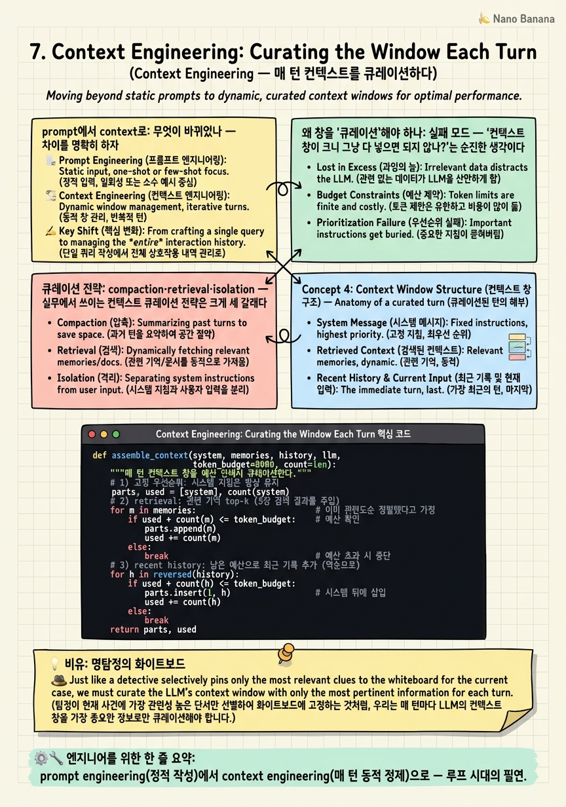

Context Engineering: Curating the Window Each Turn

🎯 학습 목표
- prompt engineering과 context engineering의 차이를 정확히 설명한다
- Karpathy·Anthropic의 정의를 인용하고, 왜 루프 시대에 부상했는지 안다
- compaction·retrieval·isolation 등 컨텍스트 큐레이션 전략을 구현한다
- context rot(맥락 오염)과 lost-in-the-middle 같은 실패 모드를 진단한다
- 5장 기억 검색과 7장 컨텍스트 조립이 어떻게 맞물리는지 이해한다
6장이 '에이전트 = 루프'라고 못 박은 순간, 자연스러운 후속 질문이 떠오른다. 그 루프가 매 턴 LLM에게 정확히 무엇을 보여줄 것인가? ReAct의 scratchpad는 길어지고, Voyager의 skill library는 불어나고, Generative Agents의 memory stream은 폭발한다. 컨텍스트 창은 유한한데 넣고 싶은 건 무한하다. 이 긴장을 다루는 규율이 Context Engineering이다.
2023년의 화두는 'prompt engineering' — 프롬프트 한 문장을 어떻게 잘 쓰느냐였다. 그런데 에이전트가 루프를 돌면 프롬프트는 한 방이 아니라 매 턴 새로 조립되는 동적 상태가 된다. Karpathy는 2025년, 이 변화를 포착해 새 용어에 힘을 실었다.
"+1 for context engineering over prompt engineering ... the delicate art and science of filling the context window with just the right information for the next step." — Andrej Karpathy (2025)
이 장은 framework/loop/graph 삼단계와 나란한 4번째 단계가 아니다. 루프 시대가 열리면서 필연적으로 부상한 운영 규율이다. 아무리 루프를 잘 짜도, 매 턴 창에 쓰레기를 채우면 에이전트는 무너진다. 반대로 창을 정갈하게 큐레이션하면 같은 모델로도 훨씬 유능해진다. 이 장에서 우리는 '루프를 실제로 돌리는 손기술'을 배운다.
핵심 내용
prompt에서 context로: 무엇이 바뀌었나
차이를 명확히 하자.
Prompt engineering = 주로 정적인 한 번의 입력을, 원하는 출력이 나오도록 문구·예시·형식을 다듬는 기술. 대화가 한두 턴일 때 유효하다.
Context engineering = 루프가 도는 내내, 매 턴 컨텍스트 창에 들어갈 토큰 전체 집합을 큐레이션·유지하는 기술. Anthropic의 정의는 이렇다.
"the set of strategies for curating and maintaining the optimal set of tokens (information) during LLM inference."
무엇이 컨텍스트에 들어가는가? 단순히 사용자 메시지만이 아니다. Anthropic은 관리 대상을 이렇게 나열한다 — 시스템 지침, 도구 정의, MCP(Model Context Protocol)로 붙는 외부 소스, 검색된 문서, 그리고 누적되는 대화·도구 결과 이력. 이 전부를 매 턴 어떻게 구성할지가 컨텍스트 엔지니어링이다.
그리고 결정적으로, 루프는 이 정보를 계속 불린다.
"An agent running in a loop generates more and more data ... this information must be cyclically refined."
즉 컨텍스트 엔지니어링은 프롬프트 엔지니어링의 자연스러운 후계자이되, 핵심 동사가 '작성(write)'에서 '정제(refine)'로 바뀐다. 매 턴 쌓이는 것을 주기적으로 솎아내는 것 — 그게 루프 시대의 진짜 기술이다.
왜 창을 '큐레이션'해야 하나: 실패 모드
'컨텍스트 창이 크니 그냥 다 넣으면 되지 않나?'는 순진한 생각이다. 창을 함부로 채우면 세 가지 병이 난다.
Lost in the middle = 긴 컨텍스트에서 모델은 앞과 끝은 잘 보지만 가운데 정보를 놓친다. 중요한 사실을 긴 이력 한복판에 묻으면 무시된다.
Context rot(맥락 오염) = 루프가 돌수록 쌓이는 실패한 시도, 낡은 도구 결과, 잘못된 중간 추론이 창을 오염시킨다. 모델은 이 쓰레기까지 '맥락'으로 받아들여 잘못된 방향으로 끌려간다. 3장의 self-bias가 컨텍스트 층위에서 재현되는 셈이다.
비용·지연·창 초과 = 토큰이 곧 돈이고 시간이다. 무지성으로 다 넣으면 비싸지고 느려지고, 결국 창 한계를 넘어 터진다.
그래서 큐레이션이 필수다. 목표는 창을 '가득' 채우는 게 아니라, 다음 스텝에 딱 필요한 최소한의 고품질 토큰만 남기는 것이다. Karpathy의 표현대로 'just the right information for the next step'. 더도 덜도 아니게.
큐레이션 전략: compaction·retrieval·isolation
실무에서 쓰이는 컨텍스트 큐레이션 전략은 크게 세 갈래다.
Compaction(압축) = 긴 이력을 요약으로 접는다. 예컨대 20턴이 지나면 앞 15턴을 'LLM이 지금까지 한 일 요약' 한 단락으로 대체한다. Claude Code가 긴 세션에서 하는 게 정확히 이것이다. 낱개 사실은 잃지만 창을 되찾는다 — 5장 reflection과 같은 발상(낱개→고수준 합성)의 컨텍스트판이다.
Retrieval(검색) = 모든 걸 창에 상주시키지 않고, 필요할 때만 꺼내온다. skill library(4장)나 memory stream(5장)을 밖에 두고, 지금 질문에 관련된 top-k만 임베딩으로 가져와 넣는다. 창은 '작업대'이고 검색 저장소는 '창고'다.
Isolation(격리) = 관련 없는 맥락을 서브에이전트로 분리한다. 큰 작업의 한 부분을 별도 컨텍스트를 가진 하위 에이전트에게 통째로 맡기고, 그 결과 요약만 메인 창으로 돌려받는다. 메인 창은 하위 작업의 잡음에 오염되지 않는다 — 이것이 8~10장 그래프/멀티에이전트의 강력한 동기다. 각 노드가 자기만의 정갈한 컨텍스트를 갖는 것.
세 전략의 공통 철학은 하나다 — 창은 유한한 고가의 자원이니, 매 턴 능동적으로 관리하라. 이 규율 없이는 아무리 정교한 루프도 몇 턴 못 가 오염되어 무너진다.
💡 비유로 이해하기
복잡한 사건을 쫓는 명탐정의 화이트보드를 떠올려보자. 보드는 크지만 무한하지 않다. 그리고 매 순간 이 보드에 무엇을 붙여둘지가 수사의 성패를 가른다.
서툰 형사는 모든 단서를 다 붙인다. 관련 없는 목격담, 이미 배제된 용의자, 낡은 메모까지. 보드는 금세 빽빽해지고, 정작 중요한 단서가 그 잡동사니(context rot) 한복판에 묻혀 안 보인다(lost in the middle). 결국 형사는 엉뚱한 방향으로 수사를 끌고 간다.
명탐정은 보드를 끊임없이 큐레이션한다. 배제된 단서는 떼어내고(정제), 여러 증언을 '피해자는 밤 10시에 살아 있었다'는 한 줄로 요약해 압축하고(compaction), 지금 안 쓰는 자료는 서류함에 넣었다가 필요할 때만 꺼낸다(retrieval). 부하에게 뒷조사를 시킬 땐 세부는 그에게 맡기고 결론만 보드에 옮긴다(isolation). 그래서 보드에는 늘 '다음 한 수에 필요한 것'만 정갈하게 남는다.
LLM의 컨텍스트 창이 바로 이 화이트보드다. 그리고 루프가 돌수록 단서는 계속 쌓인다. 매 턴 이 보드를 정리하는 손기술 — 그것이 context engineering이고, 좋은 탐정(에이전트)과 나쁜 탐정을 가르는 진짜 실력이다.
💻 코드 예시
컨텍스트 큐레이션의 핵심인 compaction과 예산 기반 조립을 구현해보자. 매 턴 '토큰 예산' 안에서 시스템 지침·검색된 기억·최근 이력을 우선순위대로 채우고, 넘치면 오래된 이력을 요약으로 접는다. 이 assemble 함수가 사실상 loop engineering의 심장 옆에 붙는 심장이다.
def assemble_context(system, memories, history, llm,
token_budget=8000, count=len):
"""매 턴 컨텍스트 창을 예산 안에서 큐레이션한다."""
# 1) 고정 우선순위: 시스템 지침은 항상 유지
parts, used = [system], count(system)
# 2) retrieval: 관련 기억 top-k (5장 검색 결과를 주입)
for m in memories: # 이미 관련도순 정렬됐다고 가정
if used + count(m) > token_budget * 0.4: # 기억엔 예산의 40%까지
break
parts.append(m); used += count(m)
# 3) compaction: 최근 이력을 넣되, 오래된 건 요약으로 접기
recent, old = history[-6:], history[:-6]
if old:
summary = llm(f"다음 대화를 3문장으로 요약:\n{old}") # 낡은 맥락 압축
parts.append(f"[이전 요약] {summary}")
used += count(summary)
for turn in recent: # 최근 턴은 원본 유지
if used + count(turn) > token_budget:
break
parts.append(turn); used += count(turn)
return "\n\n".join(parts) # 정갈하게 조립된 이번 턴의 창
이 함수가 매 루프 턴마다 호출된다고 보면 된다. (1) 우선순위 예산 배분 — 시스템 지침은 무조건, 검색 기억은 예산의 40%까지, 나머지는 최근 이력. '무엇이 밀려도 되고 무엇은 안 되는지'를 명시적으로 정하는 게 큐레이션의 핵심이다. (2) compaction — 오래된 이력(old)을 통째로 버리지 않고 3문장 요약으로 접어, 정보는 지키되 토큰은 되찾는다. 5장 reflection의 컨텍스트판이다. (3) 최근성 보존 — 최근 6턴은 원본 유지해 세밀한 맥락을 잃지 않는다(lost-in-the-middle 완화: 중요한 최신 정보를 끝에 배치). 이 함수는 5장의 retrieve(무엇을 기억할지)와 짝을 이룬다 — 5장이 '창고에서 무엇을 꺼낼지'라면, 7장은 '작업대에 어떻게 배치할지'다. 그리고 isolation은 이 창 자체를 서브에이전트별로 분리하는 것, 즉 8~10장 그래프에서 노드마다 별도 assemble_context를 도는 것으로 확장된다.
🏭 현업에서의 평가
✅ 시니어가 보는 것
- 컨텍스트 창을 유한한 고가 자원으로 보고 매 턴 능동 관리하는 사고
- prompt engineering과 context engineering의 차이(정적 작성 vs 동적 정제)를 명확히 구분
- context rot·lost-in-the-middle을 인지하고 compaction·retrieval·isolation으로 대응
- 컨텍스트 격리(서브에이전트)가 왜 그래프/멀티에이전트의 동기가 되는지 이해
⚠️ 레드 플래그
- '창이 크니 그냥 다 넣으면 된다'는 무지성 접근
- 루프가 쌓는 맥락 오염(낡은 시도·잘못된 관찰)을 정제하지 않음
- 토큰 비용·지연을 컨텍스트 설계에서 고려하지 않음
- context engineering을 prompt engineering과 같은 것으로 취급
🎤 예상 인터뷰 질문
- 긴 에이전트 세션에서 컨텍스트 창이 꽉 찰 때 무엇을, 어떤 기준으로 버리거나 압축하겠는가?
- context rot(맥락 오염)이란 무엇이며, 루프 에이전트에서 어떻게 방지하는가?
- 컨텍스트 격리(서브에이전트로 분리)가 유용한 상황과 그 대가는?
✨ 핵심 요약
작성에서 정제로
prompt engineering(정적 작성)에서 context engineering(매 턴 동적 정제)으로 — 루프 시대의 필연.
딱 필요한 것만
목표는 창을 채우는 게 아니라 '다음 스텝에 필요한 최소한의 고품질 토큰'만 남기는 것.
context rot
루프가 쌓는 낡은 시도·잘못된 관찰이 창을 오염시켜 에이전트를 잘못된 방향으로 끈다.
lost in the middle
긴 컨텍스트의 가운데 정보는 무시된다 — 중요한 건 끝이나 앞에 배치.
compaction
오래된 이력을 요약으로 접어 정보는 지키고 토큰은 되찾는다(5장 reflection의 컨텍스트판).
retrieval + isolation
관련된 것만 검색해 넣고, 무관한 맥락은 서브에이전트로 격리 — 그래프의 동기.
루프의 쌍둥이
루프를 아무리 잘 짜도 창 큐레이션이 없으면 몇 턴 못 가 무너진다. 둘은 한 몸이다.